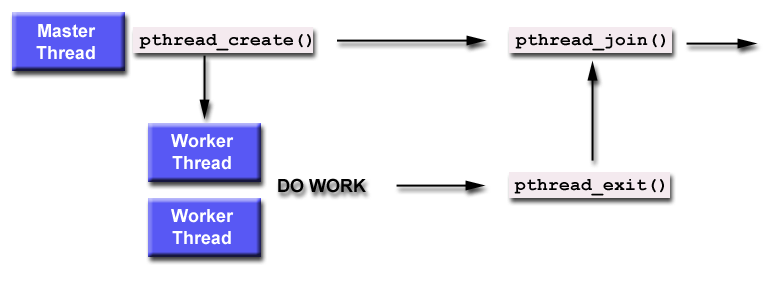

基本使用
- HelloWorld
- 创建线程
- Join 和 Detach
- Mutex(互斥锁)
- Condition Variables(条件变量)
- Semaphores(信号量)
- Reader/Writer Locks 读写锁
- 参考文章
HelloWorld
#include <stdio.h>
#include <stdlib.h>
#include <pthread.h>
void * hello(void * args) {
long rank = (long) args;
printf("Hello form sub thread %ld\n", rank);
return NULL;
}
int main() {
int thread_num = 4;
long thread_index;
pthread_t * thread_handles;
thread_handles =(pthread_t *) malloc(sizeof(pthread_t ) * thread_num);
for(thread_index = 0; thread_index < thread_num; thread_index++) {
pthread_create(&thread_handles[thread_index], NULL, hello, (void *)thread_index);
}
printf("hello from main thread\n");
for(thread_index = 0; thread_index < thread_num; thread_index++) {
pthread_join(thread_handles[thread_index], NULL);
}
free(thread_handles);
return 0;
}
编译程序, 需要加上 '-lpthread'
gcc -o helloworld helloworld.c -lpthread
一种可能的输出结果
hello from main thread
Hello form sub thread 2
Hello form sub thread 3
Hello form sub thread 1
Hello form sub thread 0
创建线程
Pthreads使用 pthread_create 函数来创建线程, 函数原型如下:
int pthread_create( pthread_t * thread,
const pthread_attr_t * attr,
void * (*start_routine) (void *),
void * arg
);
参数说明:
thread
指向执行线程标识符的指针, 通过该变量来控制线程
attr
设置线程属性, 如果为NULL, 则使用默认的属性
start_routine
线程运行函数的起始地址
arg
运行函数的参数, 这里使用 void*来作为参数类型, 以便可以向运行函数中传递任意类型的参数, 当然需要在运行函数中将参数转换为其原来的类型.
返回值
如果创建线程成功会返回0, 否则返回错误码.
下面是一个使用示例:
void * thread_function(void *arg) {
int * incoming = (int *)arg;
printf("this is in pthread and arg is %d\n", *incoming);
return NULL;
}
void hello_world() {
pthread_t thread_id ;
int value = 63;
pthread_create(&thread_id, NULL, thread_function, &value);
// 等待线程执行完
pthread_join(thread_id, NULL);
}
在上面的代码中, 在程序最后加上了 pthread_join 函数, 用来完成线程间的同步, 即主线程等待指定的线程(在上面的代码中是 thread_id 对应的线程)执行完再往下执行. 在下面会详细介绍该函数.
Join 和 Detach
Join(合并)
pthread_join 可以用于线程之间的同步, 当一个线程对另一个线程调用了join操作之后, 该线程会处于阻塞状态, 直到另外一个线程执行完毕. 下面是一个示意图:

下面是 pthread_join的函数原型:
int pthread_join( pthread_t thread,
void ** retval
);
参数说明:
thread
线程标识符, 用来指定等待哪个线程
retaval
用来存储等待线程的返回值
下面是通过获取函数返回值的一个示例:
void * p_result(void * arg) {
char * m = malloc(sizeof(char) * 3);
m[0] = 'A';
m[1] = 'B';
m[2] = 'C';
return m;
}
void test_get_result() {
pthread_t thread_id;
void * exit_status ;
pthread_create(&thread_id, NULL, p_result, NULL);
pthread_join(thread_id, & exit_status);
char * m = (char* ) exit_status;
printf("m is %s\n", m);
free(m);
}
在 p_result 函数中为了使线程执行完, 我们还可以访问到变量 m 中的数据, m 的内存采用动态分配的方式, 如果静态分配, 即如 char m[3] 的形式, 那么在函数执行完就会清空 m 的值, 我们就无法获得想要的结果.
对于一个线程来说, 其终止方式有两种: 执行完线程函数或者自身调用 pthread_exit(void *), 如果线程通过执行完线程函数而终止的, 那么其他线程通过pthread_join获得的线程返回值就是线程函数的返回值(如上面的例子), 如果线程是通过 pthread_exit(void *) 方式结束的线程, 其线程返回值就是 pthread_exit 传入的参数, 下面是一个示例:
void * p_exit_result(void * arg) {
printf("print before pthread_exit\n");
pthread_exit((void *)10L);
printf("print after pthread_exit\n");
return NULL;
}
void test_exit_result() {
pthread_t thread_id;
void * exit_status ;
pthread_create(&thread_id, NULL, p_exit_result, NULL);
pthread_join(thread_id, & exit_status);
long m = (long ) exit_status;
printf("m is %ld\n", m);
}
下面是输出结果
print before pthread_exit
m is 10
一般来说, 使用 Pthreads 创建的线程默认应该是可 join 的, 但是并不是所有实现都会这样, 所以必要情况下, 我们可以在创建线程时, 显式的指定线程是可 join 的
pthread_t thread_id;
pthread_attr_t attr;
pthread_attr_init(&attr);
pthread_attr_setdetachstate(&attr, PTHREAD_CREATE_JOINABLE);
pthread_create(&thread_id, &attr, work, (void *)arg);
pthread_attr_destroy(&attr);
pthread_join(thread_id, NULL);
Detach(分离)
对于可 join 的线程, 只有当其他线程对其调用了 pthread_join 之后, 该线程才会释放所占用的资源(例如线程所对应的标识符pthread_t, 线程的返回值信息), 如果想要系统回收线程的资源, 而不是通过调用pthread_join回收资源(会阻塞线程), 我们可以将线程设置为 DETACHED (分离的), 有三种方式将线程设为 detached的
- 创建线程时指定线程的
detach属性:pthread_attr_setdetachstate(&attr, PTHREAD_CREATE_DETACHED); - 通过在子线程中调用
pthread_detach(pthread_self()); - 在主线程中调用
pthread_detach(thread_id);(非阻塞, 执行完会立即会返回),
通过上面的方式将线程设为 detached, 线程运行结束后会自动释放所有资源.
Mutex(互斥锁)
互斥锁用来保护共享变量, 它可以保证某个时间内只有一个线程访问共享变量, 下面是使用互斥锁的具体步骤
- 声明
pthread_mutex_t(互斥锁类型) 类型的变量 - 调用
pthread_mutex_init()来初始化变量 - 在访问共享变量之前, 调用
pthread_mutex_lock()获得互斥锁, 如果互斥锁被其他线程占用, 该线程会处于等待状态 - 访问完共享变量之后, 调用
pthread_mutex_unlock()释放互斥锁, 以便其他线程使用 - 程序执行完后调用
pthread_mutex_destroy()释放资源.
创建互斥锁有两种方式: 静态方式和动态方式. 静态方式是使用宏 PTHREAD_MUTEX_INITIALIZER 来初始化锁, 如下所示:
pthread_mutex_t mutex = PTHREAD_MUTEX_INITIALIZER;
动态方式是调用 pthread_mutex_init 函数动态初始锁, 下面是该函数原型
int pthread_mutex_init(pthread_mutex_t *mutex, const pthread_mutexattr_t * attr)
下面是使用互斥锁的一个示例(使用动态方式):
pthread_mutex_t lock;
int share_data;
void * p_lock(void * arg) {
int i;
for(i = 0; i < 1024 * 1024; i++) {
pthread_mutex_lock(&lock);
share_data++;
pthread_mutex_unlock(&lock);
}
return NULL;
}
void test_lock() {
pthread_t thread_id;
void *exit_status;
int i;
pthread_mutex_init(&lock, NULL);
pthread_create(&thread_id, NULL, p_lock, NULL);
for(i = 0; i < 10; i++) {
//sleep(1);
pthread_mutex_lock(&lock);
printf("Shared integer's value = %d\n", share_data);
pthread_mutex_unlock(&lock);
}
printf("\n");
pthread_join(thread_id, & exit_status);
pthread_mutex_destroy(&lock);
}
下是使用互斥量的几个注意点:
- 使用 lock 和 unlock 一个互斥锁时, 一定要先初始化该互斥锁
- 释放互斥锁的线程必须是获得互斥锁的那个线程
- 当 destroy 互斥锁的时候, 不该有线程还在使用这个互斥锁
属性
在动态创建互斥锁时, 我们可以传入一个锁属性变量 pthread_mutexattr_t 来初始化锁的属性, 通过下面两个函数来初始化和销毁该属性对象
int pthread_mutexattr_init(pthread_mutexattr_t *attr);
int pthread_mutexattr_destroy(pthread_mutexattr_t *attr);
然后可以调用下面的方法对属性进行设置
范围 可以指定互斥锁是进程之间的同步还是进程内的同步, 下面是对应的两个锁的范围(scope)
PTHREAD_PROCESS_SHARE: 进程间同步PTHREAD_PROCESS_PRIVATE: 进程内同步, 默认值
通过调用下面的函数可以设置和获取锁的范围
int pthread_mutexattr_getpshared(const pthread_mutexattr_t * restrict attr, int *restrict pshared);
int pthread_mutexattr_setpshared(pthread_mutexattr_t *attr, int pshared);
类型 互斥锁的类型有以下几种取值方式(为了兼容性, 一个类型可能有多个名称):
PTHREAD_MUTEX_TIMED_NP / PTHREAD_MUTEX_NORMAL / PTHREAD_MUTEX_DEFAULT: 缺省值, 也就是普通锁. 当一个线程获得锁之后, 其余请求锁的线程将形成一个等待队列, 并在加锁线程解锁后按照优先级获得锁. 这种策略保证了资源分配的公正性.PTHREAD_MUTEX_RECURSIVE_NP / PTHREAD_MUTEX_RECURSIVE: 嵌套锁, 允许一个线程对同一个锁成功获得多次, 并通过多次 unlock 来解锁. 如果是不同线程请求, 则在加锁线程解锁后重新竞争.PTHREAD_MUTEX_ERRORCHECK_NP / PTHREAD_MUTEX_ERRORCHECK: 如果同一个线程请求同一个锁，则返回EDEADLK，否则与PTHREAD_MUTEX_TIMED_NP类型动作相同。这样就保证当不允许多次加锁时不会出现最简单情况下的死锁PTHREAD_MUTEX_ADAPTIVE_NP: 适应锁，动作最简单的锁类型，仅等待解锁后重新竞争
可以使用下面的函数获取和设置锁的类型
int pthread_mutexattr_gettype(const pthread_mutexattr_t *attr, int *type);
int pthread_mutexattr_settype(pthread_mutexattr_t *attr, int type);
Condition Variables(条件变量)
条件变量对应的数据类型为 pthread_cond_t, 通过使用条件变量, 可以使线程在某个 特定条件 或者 事件 发生之前处于挂起状态. 当事件或者条件发生之后, 另一个线程可以通过信号来唤起挂起的线程. 条件变量主要使用下面几个函数
初始化(init) 和互斥锁一样, 条件变量也有两种初始化方式: 静态方式和动态方式
// 静态
pthread_cond_t cond = PTHREAD_COND_INITIALIZER;
// 动态, 成功返回0
int pthread_cond_init(pthread_cond_t *restrict cond, const pthread_condattr_t *restrict attr);
销毁(destroy)
int pthread_cond_destroy(pthread_cond_t *cond);
等待函数(wait)
int pthread_cond_wait( pthread_cond_t * restrict cond,
pthread_mutex_t * restrict mutex );
int pthread_cond_timedwait( pthread_cond_t * restrict cond,
pthread_mutex_t * restrict mutex,
const struct timespec * restrict abstime );
通过调用 wait 函数, 线程会处于挂起状态. 其中 pthread_cond_timedwait 的含义为: 如果在 abstime 时间内(系统时间小于abstime), 线程没有被唤醒, 那么线程就会结束等待, 同时返回 ETIMEDOUT 错误.
唤醒函数(signal)
int pthread_cond_broadcast(pthread_cond_t *cond);
int pthread_cond_signal(pthread_cond_t *cond);
singal 函数一次只能唤醒一个线程, 而 broadcast 会唤醒所有在当前条件变量下等待的线程.
下面是条件变量的具体使用, 首先一个线程会根据条件来确实是否需要处于挂起状态, 即如下面的形式
if(flag == 0){
pthread_cond_wait(...);
}
如果flag不为0, 那么线程就不进入等待状态, 否则就挂起线程, 等待flag不为0(满足条件了, 可以往下执行)时被唤醒. 唤醒该线程的代码如下所示:
flag = 1;
pthread_cond_signal(...);
下面考虑一下这种情况, 首先 flag = 0, 当线程1执行到 if(flag == 0) 时, 发现不满足继续往下执行的条件, 即将进入挂起状态, 就在其刚要挂起的时候(还没挂起), 线程2执行了唤醒线程1的代码(修改flag的值, 唤醒线程1), 假设线程2执行完上述操作之后, 线程1仍然还没有挂起, 所以 pthread_cond_signal 并没有起到作用. 此后线程1终于进入了挂起状态, 等待线程2的唤醒, 而线程2则认为它已经唤醒了线程1, 让其往下执行了. 此时问题就来了, 如果线程2不再执行唤醒线程1的操作, 那么线程1就会永远处于挂起状态. 为了解决这种情况, 需要满足从判断 flag==0 到 pthread_cond_wait() 执行, flag 的值不能发生变化,并且不能提前执行唤醒操作. 为了实现这种需求, 我们需要加一个锁操作,
等待代码:
pthread_mutex_lock(&mutex);
if(flag == 0){
pthread_cond_wait(...);
}
pthread_mutex_unlock(&mutex);
唤醒代码
pthread_mutex_lock(&mutex);
flag = 1;
pthread_mutex_unlock(&mutex);
pthread_cond_signal(&condition);
我们看到 pthread_cond_wait 的函数原型中第一个参数为条件变量, 第二个参数为互斥锁, 之所以需要传入互斥锁, 是因为如果不传入互斥锁, 当线程进入挂起状态时, 就无法释放掉该互斥锁, 而其他线程就无法获得该互斥锁,就没办法更新flag的值, 也无法唤醒线程1. 线程1就会永远处于挂起状态, 线程2就会永远处于请求互斥锁的状态. 所以当线程1进入挂起状态时需要释放掉互斥锁, 被唤醒之后再重新获得互斥锁, 即 pthread_cond_wait 可以看成下面的操作:
pthread_mutex_unlock(&mutex);
wait_on_signal(&condition);
pthread_mutex_lock(&mutex);
所有一个条件变量总是和一个互斥锁关联.
下面再来看一下等待代码, 在某些特定情况下, 即使没有线程调用 pthread_cond_signal函数, 'pthread_cond_wait' 函数也有可能返回(具体解释可以看看 spurious wakeup), 但是此时条件并不满足, 如果程序往下执行, 那么就可能会出错. 所以为了避免这种情况, 即使线程被唤醒了, 也应该再检查一下条件是否满足, 即使用 while 循环代替 if 判断
pthread_mutex_lock(&mutex);
while(flag == 0){
pthread_cond_wait(...);
}
pthread_mutex_unlock(&mutex);
下面是一个使用示例:
pthread_cond_t is_zero;
pthread_mutex_t mutex;
int con_share_data = 32767;
void * p_condition(void * arg) {
while(con_share_data > 0) {
pthread_mutex_lock(&mutex);
con_share_data--;
pthread_mutex_unlock(&mutex);
}
pthread_cond_signal(&is_zero);
}
void test_condition() {
pthread_t thread_id;
void *exit_status;
int i;
pthread_cond_init(&is_zero, NULL);
pthread_mutex_init(&mutex, NULL);
pthread_create(&thread_id, NULL, p_condition, NULL);
pthread_mutex_lock(&mutex);
while(con_share_data != 0) {
pthread_cond_wait(& is_zero, &mutex);
}
pthread_mutex_unlock(&mutex);
pthread_join(thread_id, &exit_status);
pthread_mutex_destroy(&mutex);
pthread_cond_destroy(&is_zero);
}
Semaphores(信号量)
信号量本质上可以看做是一个计数器, 它主要有两种操作, 第一类操作为 down 或者 wait -- sem_wait(...), 目的是为了减小计数器(将信号俩减1), 另一类为 up 或者 signal -- sem_post(...) , 目的是为了增大计数器(将信号量加1). 当线程调用 sem_wait() 时, 如果信号量的值大于0, 那么只会把信号量减1, 线程会继续往下执行. 如果信号量的值为0, 那么线程就会进入阻塞状态, 直到另外一个线程执行了 sem_post() 操作, 对信号量进行了增操作, 该线程才会继续往下执行.
信号量主要用于对一些稀缺资源的同步, 什么叫做稀缺资源, 就是说这个资源只有有限的几个, 但是又多于一个, 在某一个时刻, 可以供有限的几个线程使用, 但又不是全部线程使用. 如果将信号量初始化为1, 那么该信号量就等同于互斥锁了, 因此一次只能有一个线程获得信号量的资源, 如果其他线程想要获得, 必须等该线程对信号量进行增操作. 举个例子说: 有10个人去银行办理业务, 但是银行只有4个窗口(信号量初始化为4), 所以前4个人到了银行就可以办理业务, 但是第5个人之后就必须要等待, 等前面的某个人办理完业务(增加信号量), 空出窗口来. 而当第5个人去办理业务时, 空出的窗口又被占用了(减小信号量), 剩下的人还是要等待. 信号量在执行过程中和上述例子不同的一点是, 当有空余的资源出现时, 线程并不一定按照 FIFO(先进先出) 的顺序来获取资源, 而有可能是随机一个线程获得资源.
下面是信号量相关的函数
类型
信号量的类型是 sem_t, 需要引入头文件 #include <semaphore.h>
初始化和销毁
int sem_init(sem_t *sem, int pshared, unsigned int value);
int sem_destroy(sem_t *sem);
init 函数的第二个参数用来标识信号量的范围: 0 表示一个进程中线程间共享, 非0 表示进程间共享. 第三个参数就是信号量的可用数量.
wait和signal
int sem_wait(sem_t *sem);
int sem_post(sem_t *sem);
下面是一个使用示例
int sem_share_data = 0;
// use like a mutex
sem_t binary_sem;
void * p_sem(void * arg) {
sem_wait(&binary_sem); // 减少信号量
// 在这里使用共享数据;
sem_post(&binary_sem); // 增加信号量
}
void test_sem() {
sem_init(&binary_sem, 0, 1); // 信号量初始化为1, 当初互斥锁使用
// 在这里创建线程
sem_wait(&binary_sem);
// 在这里使用共享变量
sem_post(&binary_sem);
// 在这里join线程
sem_destroy(&binary_sem);
}
Reader/Writer Locks 读写锁
对于读写锁来说, 多个线程可以同时获得读锁, 但某一个时间内, 只有一个线程可以获得写锁. 如果已经有线程获得了读锁, 则任何请求写锁的线程将被阻塞在写锁函数的调用上, 同时如果线程已经获得了写锁, 那么任何请求读锁或者写锁 的线程都会被阻塞. 下面是读写锁的基本函数:
锁类型
pthread_rwlock_t
初始化/销毁
int pthread_rwlock_init(pthread_rwlock_t *restrict rwlock, const pthread_rwlockattr_t *restrict attr);
int pthread_rwlock_destroy(pthread_rwlock_t *rwlock);
读锁
int pthread_rwlock_rdlock(pthread_rwlock_t *rwlock);
写锁
int pthread_rwlock_wrlock(pthread_rwlock_t *rwlock);
释放锁
int pthread_rwlock_unlock(pthread_rwlock_t *rwlock);
下面是一个使用示例:
pthread_rwlock_t rw_lock;
void * p_rwlock(void * arg) {
pthread_rwlock_rdlock(&rw_lock);
// 读取共享变量
pthread_rwlock_unlock(&rw_lock);
}
void test_rwlock() {
pthread_rwlock_init(&rw_lock, NULL);
// 创建线程
pthread_rwlock_wrlock(&rw_lock);
// 修改共享变量
pthread_rwlock_unlock(&rw_lock);
// join线程
pthread_rwlock_destroy(&rw_lock);
}
参考文章
pthread Tutoriaed Tutorial
POSIX Threads Programming
Linux线程-互斥锁pthread_mutex_t
Pthread：POSIX 多线程程序设计
下面列出一些学习资料，如果想深入学习Pthreads可以看下这些资料 ( 摘自POSIX 多线程程序设计)：
Pthreads多线程编程指南
Programing with POSIX thread
Pthread Primer